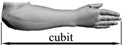
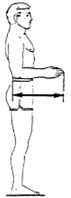

The
Case for a Larger Ark White paper
Home
Menu
COPYRIGHT TIM LOVETT
Jan 2005
This
study highlights the limitations of the short cubit, and suggests an alternative
for what might be a more robust and defensible line of reasoning.
Contents
Abstract
Too Big
yet Too Small
"To
be very Conservative..."
Too
Big or Not Too Big?
Problems
with the short cubit.
Proposed Noah-Babel-Royal
Sequence
Evidential
Clues:
Uniformity of Royal Cubits In Early Civilizations
Mysterious Length of the Royal Cubit
Royal Cubit Linked to Large Building Projects
Royal Egyptian Cubit Treasured And Maintained
Early Date of the Giza Structures
Scriptural
Clues:
A Short Flood to Babel Gap implies Cubit Continuity
Moses Knew two Cubits
but round numbers of Gen 6:15 preclude conversion to a different cubit in
Moses' day
Solomon Used The "Old Cubit" For The Temple and the Bronze Sea Points
To Royal Cubit Length
Ezekiel Measured The New Temple With A Royal Cubit points to
Common Cubit Polluted by Merchant Dishonesty
Objections:
Common Cubit Predates Royal
Hebrew
Cubit Indeterminate
Common Or Medium Cubits Used In Hebrew Construction
Siloam Tunnel Inscription
Consensus of Creationist Authors
Implications:
Structural Implications
The Space Argument
Pitfalls Of A Dual Cubit Defense
Quote
Dr
John Morris (ICR President and long-standing
Noah's
Ark authority), July 27 20041121:
"The cubit length of
17.5" to 18" was assumed in most studies because the focus had been on
the ark's volume. The authors took the conservative value of cubit size and then
demonstrated that even the minimum space was adequate to fit all the animals on
board. However, there are reasons to think longer alternatives, such as the
royal cubits of Egypt and Babylon, may be preferable. I am certainly open to a
longer cubit".
Ever
since the 1961 bombshell "The Genesis Flood" 1112,
creationist authors have maintained a loyal consensus - the Noah's Ark Cubit (NAC)
is never longer than 18". Yet longer cubits are no secret, even this 1961
work quotes a study by Scott1113 describing cubits from 17.5 to more
than 20 inches. Whitcomb and Morris select the shortest contender; "While
it is certainly possible that the cubit referred to in Genesis 6 was longer than
17.5 inches, we shall take this shorter cubit as the basis of our
calculations." p10.
Early Mediterranean cubits fall into two distinct groups,
the longer 'royal' cubits and the shorter 'common' ones [7776]. The short cubit
has become the unofficial standard for Noah's ark. The justification given by Henry Morris in
The
Genesis Record (1976) went like
this; "To
be very conservative, assume the cubit to have been only 17.5 inches, the
shortest of all cubits, so far as is known." Nothing to do with
an historical precedent, and everything to do with answering a particular
cynical notion.
Table
1 shows cubit lengths chosen by key creationist authors dealing
with Noah's Ark. This
table gives the impression that the 18 inch cubit is the upper limit to cubit
length, but the reasoning is clearly driven by a conservative space argument.
All studies have employed the "common" cubit, despite the lack of evidence of its
use in major building projects in the earliest civilizations - Noah's immediate descendents. Worse
still, the chosen cubits are mostly aimed at Hebrew definitions that postdate
the Flood by several thousand years.
|
Table
1. Cubit Length used in Noah's Ark Studies by Modern YEC Authors.
|
|
Year |
Reference |
Inch |
mm |
Authors
comment... |
Source... |
|
1961 |
"The
Genesis Flood"; John C Whitcomb, Henry M Morris. Pres and
Reformed Pub Co. 1961 |
17.5" |
445 |
"While it is certainly possible that the cubit referred to in
Genesis 6 was longer than 17.5 inches, we shall take this shorter cubit as
the basis for our calculations" p10 |
"Weights
and Measures of the Bible," R.B.Y. Scott, The Biblical
Archeologist, Vol. XXII, No. 2 (May 1959), pp.22-27. |
|
1971 |
The Ark of Noah. Henry M Morris, CRSQ Vol 8,
No 2, p142-144. 1971
|
18" |
457 |
"Assuming the cubit to be 1.5ft, which is the most likely
value" p142 |
R.B.Y.
Scott? |
|
1975 |
A
Comparison of the Ark with Modern Ships; Ralph Giannone, CRSQ Vol 12, No1,
p53, June 1975 |
18" |
457 |
"The cubit is understood to be 18 inches, which seems to be at
least approximately correct,..." |
Morris
after R.B.Y. Scott? |
|
1976 |
The
Genesis Record: Henry M Morris, Baker Book House, 1976: p181
|
17.5" |
445 |
"To
be very conservative, assume the cubit to have been only 17.5 inches, the
shortest of all cubits, so far as is known." |
R.B.Y.
Scott. Very similar wording to "The Genesis Flood" |
|
1977 |
Was Noah's Ark Stable? D H Collins, CRSQ
Vol 14, No 2, Sept 1977 |
18" |
457 |
"For present purposes I will assume
the cubit equal to 18 inches"
From
cubit list in Ramm, Bernard 1956, |
" The Christian View of Science and
Scripture". Ramm, Bernard: Wm B. Eerdmans Pub. Co. Grand
Rapids, 1954 p229." 1118 |
|
1994 |
Safety
Investigation of Noah's Ark in a Seaway; S.W.Hong et al , CEN TJ 8(1)1994
(AiG) |
(17.5")
17.72" |
(445)
450 |
"We adopted the common cubit...17.5 inches". After Scott R.B.Y 1959.
Note: The actual dimensions used in the study require a
unique cubit of 450mm,
giving the exact figures for 13.5m depth, 22.5m breadth and 135m
length.
|
R.B.Y. Scott
|
|
1996 |
Noah's Ark: A Feasibility Study: John
Woodmorappe, ICR, 1996, p10 |
18" |
457.2 |
"All
the calculations in this work involving the Ark assume a short cubit of
45.72cm." |
"Wright
G.R.H. 1985 Ancient Building in South Syria
and Palestine, Vol 1. E'J.Brill, Leiden. p419" |
|
2001 |
The
Most Amazing Ship in the History of the World; Prof. Dr. Werner Gitt,
Fundamentum; 2001 p7 (German) |
17.22" |
437.5 |
|
Modern Siloam Tunnel measurement compared to
inscription of 1200 cubits |
Too
Big yet Too Small
Genesis
6:15 " The length of the ark shall be three hundred cubits, the breadth of it
fifty cubits, and the height of it thirty cubits."
How
long is a cubit? The word comes from the Latin cubitum which refers to
the forearm. It was measured from the elbow to the fingertip. This gives us a
good idea of the size of Noah's Ark - approximately.

Establishing
the exact cubit length used for Noah's Ark may appear an impossible mission.
Short of the ancient vessel turning up on a mountaintop someday, we are left
with a variety of ancient cubits from which to choose - anything from 17"
to 24", excluding the more radical candidates. However, a small variation
in cubit length has a drastic effect on Ark volume, being the third power of
linear measure. For example; substituting the typical 18" cubit for the
famous 21.7" Royal Egyptian Cubit (REC) almost doubles the
capacity.
Creationist
authors assume the shorter cubit length to avoid the charge of exaggerating
animal carrying capacity. However, this is hardly a problem, Woodmorappe loads
his calculated animals and cargo with room to spare, even assuming worst case circumstances
such as storing a year's supply of water (i.e. no collection of rainwater).
This
leaves creationists wide open to exactly the opposite charge - understating the
size of Noah's Ark which might appear to be avoiding the problem of an oversize
wooden vessel coming apart in a big sea. Such a criticism warrants attention,
larger hulls are more susceptible to failure and the ark is longer than any
timber vessel for which there are indisputable records.1115.
On
one hand the ark is too small, on the other it is too big. How should we then
choose a suitable cubit? One option is to ignore the skeptics and attempt to
ascertain the most likely cubit referred to in Genesis 6. If
at all possible, a demonstration of historical or Biblical support for a
particular cubit length would be helpful. A narrowed cubit range influences the
resolution of related analysis, such as hull strength, interior layout, worst
case sea state1119, animal housing and/or numbers, and even minor
details such as ceiling height.
While
this paper is not a watertight argument for an exact definition of the Noah's
Ark Cubit (NAC), it is at least an attempt to collate some of the relevant clues
- clues that point to a larger cubit than the de facto standard.1116
Would
Increasing the Ark look like an Admission of Insufficient Space?
Skeptics
already consider the Creationists to be cheating on the number of animals on
board Noah's Ark. What difference would a cubit shift make?
The
focus of this paper is neither to answer the question "how do you fit all
the animals in the ark?" any more than attempting to defend the charge
"the ark is too big for wood". While the capacity issue is a popular
question it is also more elementary, hence more often asked. The second question
(strength issue) appears of lesser importance since the general public are not
so familiar with hogging and sagging loads on ship hulls. But how do these
relate to cubit size?
Why
the capacity issue is weakly linked to cubit size. When a skeptic levels the
charge of insufficient volume on board Noah's Ark the calculations (when they
are included) are invariably based on non-creationist species estimates.1116
No skeptic would bother to attack the ark's volume on the creationist's own
playing field where the alleged millions of species have been trimmed down to
some 16000 animal types 1117. Whether using Woodmorappe's 16000
animals1123 or the 35000 estimate of Whitcomb and Morris, the playing
field is dictated by the creationist's choice of animal types - a difficult task
to tackle with any serious accuracy. Variations in the food and and housing
requirements (e.g. hibernation allowed or not, degree of infancy of larger
animals) could alter the necessary volume by several more orders of magnitude.
This trivializes the choice of a small cubit in order to appear conservative.
Essentially, there is no conservative position on the space issue since anyone
who will allow Creationist numbers for the earth's replenishing fauna is no
foe.
Why
the strength issue is strongly linked to cubit size. The size variation of a
wooden hull is a different matter, strengths and wave loads can be estimated
using known relationships such as ABS rules. Ships sizes can be compared. Even
the short cubit ark is longer than the known range for wooden vessels. For this
reason the structural limitations of a larger Ark might be regarded as more
apologetically significant than the more popular capacity question. In essence,
it is impossible to answer the capacity issue conservatively, and choosing the
smallest cubit leaves the strength issue unaddressed. Yet this is the one
argument that can be tackled - the seaworthiness of 300 cubits of wooden vessel.
Of course, a conservative treatment must employ a worst case (longest) cubit,
unless a more likely cubit can be found.
Then
again, one could always ignore the skeptics and attempt to find the most likely
cubit size referred to in Genesis 6:15 for the sake of Biblical accuracy.
Problems
with the short cubit.
Noah
was no Hebrew. Noah's ark has nothing to do with the length of Hebrew cubits
determined from post exilic constructions in Israel. This has JEPD1122
undertones. Noah's Ark was constructed a long, long time before Israel appeared.
Those that postulate a Genesis account pieced together by a bunch of scribes
rehashing Babylonian stories like the Gilgamesh Epic would naturally expect the
ark to be measured with a contemporaneous Hebrew cubit. Noah was no Hebrew, he
built the ark in a different country, at a different time and in a different
world! Noha His genetics are inescapable.
Too
Short for an Ante-Diluvian forearm. The Creationist model holds fast to the
Biblical teaching of pre-flood life spans approaching a thousand years. Combined
with the thoroughly documented trend of fossilsenlargment
This
study explores common cubit definitions, highlighting the possibility of the ark
being larger than current estimates. Previous studies have used the short cubit to
confirm there was
ample room on the ark. Likewise, stability and
seakeeping are also understated when using a short cubit. However, a conservative
analysis of the strength and construction of the ark is exactly the
opposite - the long cubit becomes the "worst case" scenario. If the timber hull of Noah's Ark had to survive
heavy seas, then structural issues (such as leakage due to hull flexing) need to
be assessed. If there is even a slight chance of Genesis 6:15 referring to the
long cubit, then conservative structural analysis should employ
this scale.
Let's
assume for a moment that the long cubit is the best choice. God then defined an
ark 515 ft (157m) long. Obviously the ark should have been perfect fit,
otherwise God made Noah do a whole lot of work for nothing. Now we have a
problem. Woodmorappe's calculations show that the suggested the 16000 animals fit
easily into
an 18" cubit ark, but if the ark was built using a cubit closer to 21"
then the space calculations are out by almost 60%. (Point 331)
The
common and royal cubits of Egypt are generally (though not exclusively) regarded
as 6 palm and 7 palm cubits. Being closer to the anthropometric mean, the 6 palm
cubit is treated as most ancient and the royal 7 palm cubit a later modified
version. There is no historical or evidential support for the royal cubit
appearing after the common. The royal cubit bursts onto the architectural scene
as suddenly as the spectacular constructions themselves.
This immediately casts doubt on the common
cubit as a candidate for Noah's Ark. The general consensus is that the royal
cubits predate the common. Obvious similarities in the royal cubits of early
post flood civilizations point to a single historical source - the Tower of
Babel. The link from Babel back to Noah is a simple one, and changing the length
of the cubit during this time would have been an uphill battle while everyone
was working together and speaking one language. So Noah's cubit should have
continued relatively intact right up to the royal building cubits of Babylon and
Egypt. At the very least, the sum of arguments for using the royal cubit to
define Noah's Ark is much stronger than the case for the common cubit.
Even
a cursory examination shows up problems with the common cubit. For example, if
we can take the longevity of the early patriachs as a clue, we should expect to
see a general degradation of physical height at least in terms of population
averages. However, the common cubit is a mere 18 inches (457mm) at best,
corresponding to a person less than 5' 6" (1676mm) tall. This is too short
for the Creationist model of pristine health and stature before the flood,
especially considering Noah's cubit would have been taken from a kingly figure
such as Adam, Methuselah or even Noah himself.
More
than a few (non creationist) authors have put forward complicated theories for
the origin of the cubit, particularly the famous Royal Egyptian cubit. Some even
claim the ancients derived the length by some special ratio of the diameter of
the earth. However, its very name and definition is firmly the forearm, most
often elbow-to-fingertip. The cubit was ubiquitous
in ancient times and it's origin mystery (Ref 9836). So here's a suggested explanation based on the Biblical account
and the well documented tendency of construction standards to remain unchanged
throughout long periods of continuous civilization. It also explains why the
royal cubits appear exaggerated. (Ref 9991)
Pre-flood
technology. Brass
and iron were being worked in the eighth generation, Noah was born in the tenth.
Gen 4:17 - 22 describes the descendents of Cain. Adam > Cain > Enoch >
Irad > Mehujael > Methusael > Lamech > Jabal (by wife Adah)
the father of tent dwellers, Jubal (by wife Adah) the father of musicians,
Tubalcain (by wife Zillah) the instructor of every artificer in brass and iron.
It is highly probable that the Cain lineage was ahead of Noah's ancestors by
more than one generation. At the very least, Cain himself was exactly one
generation ahead of Seth; his son Enoch (Gen 4:17) was born approximately the
same time as second-generation Seth (Gen 4:25). This explains Seth's late birth,
130 years into Adam's created maturity. Metalworking was established earlier
than the seventh generation (622 Anno Mundi), probably closer to 500 AM. So Noah
began building the ark almost a thousand years after metals were being processed
at temperatures of 1100C
(1760F) for bronze, 1300C (2370F) for cast iron, even higher for 'forged iron' (steel).
This guarantees no problems getting the temperatures required for firing
pottery, from earthenware to stoneware (900 to 1300C). Musical instruments
and working with iron sows technology was well developed. (Ref 8765)
Noah
built the Ark using the building cubit of his day.
The cubit obviously existed before Noah's time, otherwise God's instructions
would be have made no sense to him (Gen 6:15). Regardless of where Noah got his
cubit from, the Biblical view of created intelligence and the rapid development
of technology such as metal tools and musical instruments emntsmetallwokringto expect the cubit to
have been
defined well before Noah came on the scene. Standardization is necessary for any
serious construction project and it is unreasonable to expect the Ark was the
first time the ante-diluvians had attempted to build something big. At worst,
Noah used his own forearm to set the cubit length, and he was the third oldest
recorded man, beating Adam's 930 year lifespan by 20 years. We would
expect Noah or his even more 'important' ancestor to be somewhat tall, but
not taller than a modern extreme. The reasoning is similar to the modern
diversity in the canine kind, we should expect Adam to be a brilliant
all-rounder but not necessarily taller than today's elite basketball players. Perhaps 6' 4" (1930mm).
The
Tower of Babel was almost certainly built using the same cubit as the Ark. Immediately after
the flood Noah would have been the world's most influential figure, and he
lived another 350 years. His three sons were experienced in construction and
would have passed on their knowledge to later generations. The Bible clearly
indicates the new civilization was staying in the one place and working
together, a sure recipe for continuation of the cubit standard. Standards of
measurement are not easily changed even when there is pressure to change them.
In the case of the Babel construction, the pressure would have been to maintain
the cubit. The chances of the Ark cubit being used in the Tower of Babel are
very high indeed, since they were still acting as one people and one language.
Gen 11:1
The
post Babel nations took the Ark cubit with them. One of the most remarkable
features of the royal cubits is their similarity. The most ancient cubits of
Egypt, Babylon and Persia are almost identical, pointing to a single origin. Had the
cultures developed independently we should see an early
diversity of standards with a later convergence with increasing trade. However
the evidence points to exactly the opposite. It
appears the cubit itself lends support to the Biblical Babel dispersion as
indicated in the Table of Nations of Genesis 10. The most reliable cubit of all is
the Royal Egyptian cubit, well documented and cross-checked using measurements
from the pyramids and all types of ancient constructions, builders marks, cubit rods and even surviving cubit standards in
granite. The variation is an almost unbelievable 1/50th of an inch (0.5mm) (Ref
1).
The
common cubit became popular.
The approximate cubit of everyday commerce and domestic construction
was not regulated like the Egyptian royal cubit. By the time of Moses
there were two distinct cubits, the common cubit now called "the cubit of
man". Interestingly, Egypt, Babylon and the Hebrews all had the dual cubit
definitions, common cubits around 18" and royal cubits around 21".
However, Jewish scholars believe the Hebrews did not get their measurement
system through Moses (i.e. Babel to Egypt to Israel) but directly from Babylon.
Not only do the subdivisions of the cubit follow the Babylonian system, but
other weights and measures are obviously similar. Just as we
see today, the common cubit would have been an unregulated measurement and
likely to drift under commercial pressure (dishonesty). Obviously this was a problem
in Moses day and still an issue during Solomon's reign, as seen by the
clear teaching opposing dishonest measurement standards.
Solomon
may have used the royal cubit to build the temple.
Solomon is recorded as the
wisest man of all time (which by-the-way, means he was wiser than both Adam and
Noah). This wisdom was a practical wisdom; apart from his fame as a diplomat and
philosopher, he excelled as a biologist, builder, engineer, metallurgist,
administrator, and it appears, an historian. When constructing the temple, 2
Chron 3:3. "The
length by cubits after the first measure was threescore cubits..." Since
Solomon was more than capable of piecing a bit of history together, God told him
(See Note 2222) to use the building cubit (the old long ones), not the everyday commercial
cubit
(the new corrupted ones). Solomon was smart enough to know that real building projects
used the royal cubit, not the 'modern' corrupted common cubit. Since dishonest weights and
measures are an abomination to the LORD (Pr 20:10),
it is hardly surprising the temple should have nothing to do with it. Analysis
of the relationship between the dimensions and capacity of Solomon's bronze sea
points to the royal cubit. (ref 6955)
The
Siloam Tunnel was constructed using the common cubit.
Later, in Hezekiah's time (or perhaps later, [8889]), the short cubit was used
for constructing the Siloam tunnel. Modern measurements based on the Biblical
1200 cubits indicate a length of 17.22". This is the shortest cubit listed
in Table 1, corresponding to a human height of approximately 5' 4" (1626mm). Perhaps
the tunnel measurement had been rounded up to sound impressive in Hezekiah's
day, or maybe the common cubit continued to shrink due to the pressures of
commercial dishonesty. In any case the Siloam tunnel is a poor choice for
defining Noah's Ark.
Evidential
Clues
The
most famous ancient cubit is the Royal Egyptian Cubit (REC), accurately
preserved by the pyramids of Giza. Other nations also had long cubits
collectively known as "royal" cubits.
|
Civilization
|
Name |
Inches |
mm |
|
Mesopotamia |
kus |
20.6" - 20.9" |
522-532 |
|
Persia
|
arasni |
20.5" - 21.4" |
520-543 |
|
Egypt |
meh |
20.64" - 20.66" |
524-525 |
Scholars
consider the REC to be too long for an ancient forearm, so speculation abounds
on its origin. Some treat it as an exaggerated forearm measurement, others
simply define it as a common cubit with an extra palm. The odd 7 divisions is
hardly conducive to construction and dissatisfaction with these theories has led
to more imaginative suggestions such as the REC being a proportion of the
earth's diameter.
The
exaggerated The royal cubits are suspiciously
similar, and hopelessly inexplicable to someone believing these civilizations
arose independently. Even more unlikely is the idea that the royal cubit was a
fictitious oversized measurement designed to make their king look larger than
life. The concept of competing civilizations exaggerating equally is
tenuous.
There is even mention of
English, Chinese and Mexico's Aztec cubits within the range 20.4" to
20.9" (518 - 531mm)
Royal Cubit
Linked to Large Building Projects
Even as early as 1961, the
longer cubits were an option. In 1976, Henry Morris, in his classic book
"The Genesis Record" sums it up best when he says "To
be very conservative, assume the cubit to have been only 17.5
inches..." The common cubit is conservative, but is it the most likely?
Supporting
Points
1.
The common cubit is not the most ancient and does not appear to have any
connection with Noah's Ark.
2.
In the absence of an obvious choice, a structural defense must use the longest
potential cubit.
3.
If the royal cubit is the best estimate for the Ark then current space
calculations are off by 60%
4.
Opposing constraints of structure vs space suggests a multiple solution (proof in
each case), but the divine source of Noah's specifications suggest a perfect
fit.
5.
The shortening of the unregulated common cubit may have been due to commercial deflation.
(Dishonest scales).
No
basis for the Common Cubit predating the Royal
The
evolutionary minded historian (including the authors of many Bible
encyclopedias) attempt to paint a picture of civilization developing from crude
beginnings. Since the royal or building cubits are obviously superior to the
common cubit, they sometimes imply the ancients came up with the longer cubit at
a later date. (See note 5555) Trouble is, they don't have a later date, nor any
indication of its beginnings. They assume that the pressures of ever increasing
technology forced the shorter common cubit to be abandoned in favor of the
longer royal type. Trouble is, history and the Bible point to the common cubit
taking over from the royal. Commentators then treat the common cubit as the
anthropometric measure, and the royal cubit as a derived measure. No explanation
is given as to why the building cubit was made so much longer in the first
place, other than the 7 to 6 handbreadth ratio. Some argue the 7 palm
subdivision helped in calculations involving Pi (as 22/7), but this is tenuous.
Adding a handbreadth won't improve
accuracy - all that was needed was a fixed standard. Few commentators are brave
enough to postulated a rough date for the origin of the longer cubit
standard. Chances are, there isn't one, because it goes right back to the flood.
Probable too that the longer cubit is due to the continued use of an ante-diluvian
cubit that came from someone taller than the average post-Babel individual.
After all, the Hebrews still called both the long and short versions
"cubit" (ammah) which means "mother of the arm".
But
the Bible gives the radically different view that our history really began with
Noah, obviously very capable technically. So the same technology that built a
huge seaworthy vessel would have continued right through to the construction the
Tower of Babel. Such engineering prowess logically demands a standardized system
of measurement in Noah's day, and probably well before. Since the culture
directly after the flood was unified and continuous, the defined cubit would be
nearly impossible to alter, so Noah's cubit would have been used on that tower.
Since God dispersed the people quite suddenly by confusing their languages, we
should expect to see similar cubits used for construction all over the ancient
world.
How
long is a cubit?

The
cubit is defined as the length from elbow to fingertip. This measurement varies
with stature, the Mishna (Jewish writings) give the height of a man as 4 cubits,
a ratio of 25%. Measurements taken from UK airmen (Ref 1) indicate a ratio closer to
28%. The author's ratio is 27.7% (480/1730mm).
Ancient
civilizations used a standard cubit length. For example, the pyramids of Geza
were constructed using the 524mm (20.7") Royal Egyptian Cubit. This cubit
has been quite accurately determined, not only from the constructions
themselves, but also from actual cubit standards left behind by the ancient
craftsmen. Even as early as 1877, Petrie (Ref 2) published his findings on
the ancient measure, saying that "about a dozen of the actual cubit rods
that are known yield 20.65 ± .01 inches". Measurements within the pyramid
chambers support this figure, dimensions within the King's chamber of the Great
Pyramid give a mean of
20.620 ± .004 inches. Other
evidences are left by the builders themselves, "On the facade of one of the
tombs at Beni Hassan there is a scratch left by the workmen at every cubit
length. The cubit there is a long variety, of 20.7 to 20.8." Petrie
made a detailed analysis and concluded the length of the Royal Egyptian Cubit
was Here, then, by the
earliest monument that is known to give the cubit, by the mean of the cubits in
seven early monuments, by the mean of 28 examples of various dates and
qualities, and by the mean of a dozen cubit rods, the result is always within
1/50 inch of 20.63
Arguments
for using the longer 'royal' cubit
It
is considered to be the earliest
cubit
More
reasonable human stature for ante-diluvians
The
royal was used for building, so logically descended from the Ark
It
is virtually identical in early civilizations indicating a single origin (Noah)
Fossil
record indicates everything was bigger, so we should expect people to be on the
large side
Standards
tend not to change so we should expect to see Noah's cubit carried through Babel
and into early civilizations
Explains
why the royal cubits appeared to be exaggerated to modern historians
Contents
Cubits
used in previous studies
Some
cubit definitions
Cubit
Issues
A
modern cubit
Implications
of a long cubit for the Ark
(See
also Cubit References)
"The
actual length of the cubit varies from 18 inches to 25 inches." (Collins
1977)
Encyclopedia
Britannica says the cubit was "usually equal to about 18 inches". In
the case of Noah's Ark however, we are interested in the definitions of the
earliest cubits - not the most common. "The
probability is that the longer was the original cubit." (Easton's
Bible dictionary).
Ancient
cubits varied in their level of standardization. The Royal Egyptian cubit was
remarkably consistent and well defined. In Mesopotamia, cubit standards did not
survive (probably due to wood construction) - so investigation is limited to
clues in building proportions. Not all cubits were defined as the distance from
elbow to fingertip either, and there were usually hand-width, finger width
(digits) or spans subdividing the cubit.
Ancient
cubits could be classified into 2 main groups - long and short. The approximate
height of the person from whom the cubit was measured is tabulated below.
|
GROUP |
CUBIT
|
Inch |
mm |
Stature (in) |
Stature
(mm) |
|
Short
Cubits
|
Short Hebrew
|
17.5"
|
445 mm
|
5' 4"
|
1636 mm
|
|
Short Egyptian
|
17.6"
|
447 mm
|
5' 5"
|
1646 mm
|
|
Common |
18"
|
457 mm
|
5' 6"
|
1683 mm
|
|
Long
Cubits
|
Babylonian royal |
19.8"
|
503 mm
|
6' 1"
|
1852 mm
|
|
Long Hebrew |
20.4"
|
518 mm
|
6' 3"
|
1907 mm
|
|
Royal Egyptian |
20.6"
|
524 mm
|
6' 4"
|
1929 mm
|
|
Extra Long
|
Long
Babylonian |
24"
|
610 mm
|
7' 4"
|
2246 mm
|
Supporting
Points
1.
The common cubit is not the most ancient and does not appear to have any
connection with Noah's Ark.
2.
A structural defense should use the longer cubit.
3.
A defense of adequate space defense should use the longer cubit if it is more
likely than the shorter cubit.
3.
Opposing constraints of room vs structure suggests a multiple solution (proof in
each case), but the divine source of Noah's specifications suggest a perfect
fit.
4.
If the longer cubit turns out to be the best approximation and we can assume God
specified the Ark in those units, it should not be possible to fit everything onto an ark of
the common cubit. If we can then Noah was required to build
an excessively large vessel, 40% larger than necessary.
5. If
the long cubit is a more correct choice, the ark's cargo and number of animals
might be cross-checked, especially since a good (not too tight, not too loose)
fit is expected.
6.
The volume of the ark is related to the third power of cubit length.
7.
The necessary strength of the ark is proportional to the cubit to the power of
3.5
8.
The shortening of the unregulated common cubit due to commercial deflation.
(Dishonest scales).
Is
Noah's cubit too ancient to investigate?.
The
cubit has disappeared today, although in some countries it was still in use until around 1960 when
it was replaced by metric units. There
are many examples of measurement systems lasting through the ages. In a
continuous civilization, an important base-unit like length is not easily changed. Consider
the effort it took to deliberately convert to the metric system. For example,
the standard railroad gauge (4ft 8 1/2") is a
strange choice - the same gauge that was used in the hand drawn carts of the
English coal mines, that found itself in coach-building and eventually trains.. We measure angles using 90 degrees for a right angle. We
have never stopped counting 7 days as a week. The origin of
many measurement systems can go back centuries.
It is worth considering that
Noah's cubit would have been the only unit of length immediately after the flood and that Noah's three
sons were technically skilled builders. Furthermore, Noah lived for another 350
years in the new world and his son Shem was a contemporary of Abraham. Abraham
lived some time in Egypt and had influence (the Pharaoh liked his wife). Noah's cubit could
easily appear in these early civilizations. In fact, it is reasonable to
expect Noah's cubit to dominate every culture until the Babel incident.
The
Hebrew for Cubit is "ammah", derived from mother, as in
"mother unit of measure". The same word is used throughout the Old
Testament as a unit of length. This could convey the idea of a measurement
passed down from an ancestor, who defined the original or 'mother' cubit. Incidentally,
the word for mother is common throughout many languages.
As
for standards, the Egyptian cubit has survived intact in cubit standards of wood
and stone, as well as in the meticulous dimensions of their architecture. For
thousands of years
this cubit varied less than 5%. So it is quite likely that even the actual
length of Noah's cubit may have been passed down relatively intact, at least to
a few civilizations.
The
Long and the Short of it.
Noah's
Ark landed in the middle east. The tower of Babel was almost certainly
constructed in the same cubit as the ark. If dominant cultures were to travel
the least distance (or even stay put), then the ancient empires most likely to have
continued with Noah's cubit would probably come from Mesopotamia or its
vicinity. There are hints that Babylon was built on the site of the
original Babel. These cultures would still have an infrastructure that relied on this
unit of measure - hence the cubit
from Sumeria should be a pretty close estimate. The three ancient civilizations in this area have surprisingly
similar cubit definitions - the Egyptian royal cubit more closely defined then
the other units. Since the Hebrews spent 400 years in Egypt, it would be natural
to assume Hebrew cubits were an inherited Egyptian
measure. However, when the subdivision structure is compared, the Hebrew
cubit looks more like a Babylon import.
Not
that it matters much, look how similar they are;
|
Civilization
|
Name |
Inches |
mm |
|
Mesopotamia
(Iraq) |
kus |
20.6" - 20.9" |
522-532 |
|
Persia
(Iran-ish)
|
|
20.5" - 21.4" |
520-543 |
|
Egypt |
meh |
20.6" |
524 |
Known
for their meticulous construction and love of mathematics, the Egyptian cubit
was an accurate 20.6" (524mm). This length can be quite readily derived
from the study of construction proportions - such as the chamber
measurements in the Pyramids of Gezih. Better than this, actual cubit
standards have been well preserved in the dry conditions. See Petrie's
derivations of the royal Egyptian cubit.
In
Mesopotamia, wooden "cubit rods" decay in the wet soil, so the length
is obtained from buildings that were probably laid out in whole cubits. A copper
standard was unearthed, but the general picture is that cubits outside of Egypt
were less exact. Modern scholars find variation in
these measurements due in part to the lack of reliable records, as well as the tolerance limitations of ancient
construction.
Did
Moses know two cubits?
In
his final speech before the Sanhedrin, Stephen described Moses as "educated
in all the wisdom of the Egyptians" (Acts 7:22). Moses was obviously
familiar with the Egyptian royal cubit and intelligent enough to query its
origin. Probably not a Pharaoh - the short length of the
typical sarcophagus attests to this. Imagine Moses as a young man completing
his studies in mathematics being handed the Royal Cubit standard to calculate
the area of the palace foyer. Imagine the temptation to put this famous cubit against his
own arm. Surely Moses would have spotted the
anomaly - this was not Pharaoh's forearm.
For
this reason, many commentators claim the Egyptian royal cubit was an
exaggeration. The problem with this charge is that three different empires all
exaggerate - equally. If some Pharaoh had felt the need to appear larger than
life, he could at least have chosen a cubit superior to his rivals from the
Persian Gulf. Worse still, the later Egyptian empire was defining a cubit
slightly less than the average on the other side of the Arabian desert. A more
realistic assumption would be that all these early civilizations inherited their
cubit length from the one source.
Moses,
the author of both Genesis and Deuteronomy applies a different cubit definition
when he writes about a contemporary measurement of the enormous bed of King Og.
Not
rendered in the NIV, the OKJ translation of Duet
3:11 describes the "cubit of a man" as the unit of measure used
here. The giant Og, king of Bashan slept in a bed 9 cubits long. By
the short cubit (18") this is 13 1/2 feet, by the long cubit almost 16
feet. (Now that IS excessive). In the phrase "cubit of a man",
the word for man is "iysh" which is usually associated with a particular
man, not "adam" which is more general - like
"mankind". Moses, the obvious author/compiler of both Genesis and
Deuteronomy, appears to be making a distinction between the old cubit and the
cubit defined by typical forearm length of his day. From Moses' point of view, Genesis
was history, but Deuteronomy was current news "is it not in Rabbath of the
children of the Ammon? Deut 3:11". Moses, educated in Egypt and familiar
with the Royal Egyptian cubit of 20.6" (525mm), never made such a
distinction in Genesis. This indicates Genesis was measured in an ancient cubit,
not by the forearm of Moses' day. Since Moses is demonstrating his
awareness of two different cubits, he should have applied himself to the task of
defining Noah's cubit also - perhaps with a comment like "according to the
cubit of Noah". It appears he was satisfied to let the reader assume
it was the "old" measure - not distinguished from the Royal Egyptian
cubit. See also: Revell Bible dictionary
Solomon
knew two cubits.
2
Chron 3:3. ...Solomon was instructed for the building of the house of God. The
length by cubits after the first measure was threescore cubits...
Since
Solomon was capable of piecing a bit of history together, God told him to build
with the building cubit (the old long ones), not the everyday commercial cubits
(the new short ones). Later, in Hezekiah's time, the short cubit was used later
in Siloam tunnel (confirmed by modern measurements), so the "cubits after
the first measure" must have been the other ones. Long.

|
An
exaggerated cubit ... Or are we getting smaller?
Shakespeare
lived in a tiny house, and the old houses of England had low doors and short
beds. The English evolutionist would naturally assume our increasing stature is
a part of the evolution of man. Combine this with a few small Egyptian Pharaohs
and you have a tidy precept - ancient people were small. Unfortunately, this
does not work in Africa where supposed 'primitive' tribesmen can average well
over 6 feet. It must also ignore the impressive physique of the Pacific
Islanders 'discovered' by European sailors in the previous century, and a host
of other anomalies. Even today, evolutionists are surprised when an ancient
human is taller then expected.
The
Bible paints a different picture. The original creation was perfect, including
extreme longevity and obvious mental and physical prowess. Good health is more
likely to allow a person to grow to their correct height - at least in terms of
population averages. Deteriorating genetics and the startling nutritional
ignorance of many ancient urban people (e.g scurvy) would go a long way to
explain their short stature.
So
if the ante-diluvians were taller, we would expect Noah to be tall. The Ancient
cubits correspond to a person around 6ft 4" tall. This is tall, but not
impossible. In fact it is far more reasonable than an antediluvian cubit of
17.5" (163cm - 5ft 4in tall), almost certainly too small for Noah.
|
Dimensions
are not converted.
The
dimensions of the ark are 300 long, 50 wide and 30 high. These are round numbers
and the proportions are excellent for ship stability and sea-keeping
performance. (4) Most readers would assume these were the original numbers God
gave to Noah. Assuming these figures were recorded (probably by Shem),
Moses would have compiled them into his manuscript some years later. Being well
educated and alert, Moses would have been capable of converting these figures
into the equivalent units of his day.
However,
the numbers do not appear to have been modified. Conversion from one cubit to
another would produce ugly numbers. For example, if the original length had been
261 Royal Babylonian cubits, this would be 251 Royal Egyptian cubits. If Moses
had then rounded off to give dimensions in an apparent single significant figure
(3 hundreds, 5 tens, 3 tens) the error could be as high as 20% (For example; rounding off
251 to the nearest hundred adds an extra 49/251 = 19.5%, which is more than the
difference between the common short and long cubits.) Worse still, if the depth
had been rounded down from 34 to 30 (12%) then the L/D ratio is modified by 35%.
The Hong study showed that the dimensions were optimal within 20%. In other
words, rounding off to a single significant figure could force the proportions
outside the optimal values.
The
most reasonable assumption would be that Moses copied (or was told) the original
dimensions as exactly 300 x 50 x 30. Setting
the precedent for later Jewish scholars, Moses was no doubt careful to maintain
the original numbers.
People
like their kings to be tall.
The
Bible gives many examples of height being revered among men. God is displeased
with this tendency, and gives them a dud king that looks the part - King Saul.
The fact that he looked like a king indicates that kingship was linked to tall
stature.(1 Sam 9:2). Antediluvian
superiority aside, Noah's cubit would likely have come from a king, and a king
would most likely have been tall.
Reverence
for ancestry is another common theme - especially towards the early patriarchs.
It would be reasonable to assume that the owner of the forearm defining Noah's cubit was probably someone old and famous. Anyone old was
probably taller, and anyone famous was probably tall. Discounting Nephilim due
to their extreme ungodliness, a 20.6" cubit (6ft 4" person) is then
quite a reasonable choice - simply a tall antediluvian.
Some
Jewish tradition has Noah is the realm of the giants. The cubit does not show
this however, a 20.6" forearm length is a tall person - but no giant. This
misconception might be explained by the deterioration of health and stature
after the flood, making a 20.6" cubit seem superhuman. (e.g. Short
stature of Egyptian Pharaohs).
The
Bible gives some examples of height being revered among men. God is displeased
with this tendency, and gives them a dud king that looks the part - King Saul.
The fact that he looked like a king indicates that kingship was linked to tall
stature.(1 Sam 9:2). Antediluvian
superiority aside, Noah's cubit would likely have come from a king, and a king
would most likely have been tall.
|
|
Forearm
Hand Length. Posterior point of the elbow - dac
tylion. (Ref 2)
Procedure:
With the beam caliper, measure the horizontal distance from the elbow (olecranon
process) to the tip of the middle finger.
Measure
your own cubit and compare results. Check if your cubit is around 28% of your
height.
The
Mishna (Jewish writings) states that the height of a man is 4 cubits (25%)
|
|

|
Forearm
functional reach + hand length. Anthropometric data for British military (UK
airmen) is freely available (Ref 3). A direct cubit was not measured, but can be
derived from the functional forearm reach (21) and the hand correction factors
(33 & 34), where a cubit = 21 + 33 - 34

|
|
1987 Measurements for UK
aircrew
|
| |
Measurement |
3rd
percentile
|
50th
percentile
|
97th
percentile
|
| |
stature
|
1658 |
1783 |
1901 |
| 21 |
cubit-grip
|
390 |
424 |
462 |
| 33 |
grip correction -
ext
|
178 |
195 |
212 |
| 34 |
grip correction -
clasp
|
107 |
117 |
127 |
| |
21 + 33 - 34
|
461 |
502 |
547 |
| |
cubit % of stature
|
27.80% |
28.15% |
28.77% |
The
mid-sized person flying planes in the UK had a cubit of 502mm (19.8"). UK
airmen were approx 1.5% taller than the US army measurements of 1988, dropping
to a 1% advantage in the more competitive 97th percentile. So these servicemen
were slightly taller than normal. "Clinical normality" in height is
defined as about the range 54"-79". The average stature worldwide is
1650mm ´ 80mm (64.96" ´ 3.15") for men and 60.5" ´ 2.95"
for women. (Ref 5).
Considering
Noah was only 10 generations from Adam and got the bronze medal in the
longevity records, it would be safe to assume he was a lot healthier (and taller) than the
average male on the planet today, or in the UK air force for that matter. Yet a
cubit of only 457mm (18") cubit corresponds to 28% of a mere 1632mm
(64.25") stature, well below the world average today. The picture is even
more grim and Noah becomes vertically challenged if the 25% Mishna rule is
applied. In any case a longer cubit would be a more realistic choice.
The
longer measures such as the Nippur cubit or the Royal Egyptian cubit are a
better match to archeological evidence, and to the Biblical framework of a
creation in bondage to decay. (Romans 8:21). A structural study of Noah's Ark
should take the more realistic long cubits into
consideration.
Implications of a long cubit for
the ark.
One
reason to prefer the shorter cubit is that it defines a conservatively small ark. This is the
best way to defend the ark against accusations of insufficient space - "How
could all those animals fit on the ark". Space requirements have been
documented by John Woodmorappe in "Noah's Ark: A Feasibility Study".
Using the 18" cubit (p50), he concludes that the animals would require only
half the floor space - and this is without putting cages one above the other
(p16). There is 15 feet between floors which is ample headroom.
However,
when making a case for the structural integrity of the ark, the long cubit
should be used. Whenever the forces on an object are mass-related, the stresses
increase in proportion to scale. This defines a maximum size limit to buildings,
bridges, aircraft and machines. The larger the vessel, the more critical the
structure. For example, the bending load applied by waves is considered to be
proportional to the length of the vessel to the power of 3.5. See Wave
Bending Moment
|

|
Stress
increases with Size
Consider
a rectangular beam (BxD) cantilevered over a length (L), supporting its own
weight (W);
Stress
= 3 x W x L / (B x D2).
If
you double the scale, you will double all the dimensions, which will increase
the weight 8 times.
So
Stress = 3 * 8W * 2L / (2B * (2D)2 ) = 6WL/(BD2), which
means stress has also doubled.
|
Generally
speaking, as scale increases mass related forces (like weight) increase by scale3,
but the cross-sectional area only increases by scale2. Since Stress =
Force / Area, the stress increases by scale3/scale3, or
scale1 - i.e. Stress is proportional to scale.
Therefore,
larger structures need to be more stout. Thus a dinosaur is heavy boned, yet a
spider can have whisker thin legs. A flea can leap a hundred
times its own size, but an elephant can barely get off the ground. A small gymnast has an advantage,
a cat can fall out of a tree and walk
away, and Tyrannosaurus Rex was probably rather clumsy. So the fact that an ant
can carry seven times its own weight is not so amazing after all.
In
engineering, the same applies to boats, buildings and planes. Have you noticed
how we haven't really made things much bigger than we did 30 years ago? We can't
unless we find a material that is many times stronger than what we had before.
Assuming
sufficient wave size (probably a reasonable assumption), a longer cubit makes
structural strength a more significant issue for the ark.
|

|
Large
size demands a stout structure.
We
need to keep the stress within safe limits, so any increases in size must have a
corresponding increase in the stoutness of structural elements.
In
the previous example we wanted to double the length of the beam. This requires a
4 fold increase in breadth and depth, increasing the section modulus 64 times,
but the mass only 32 times - thereby maintain the same level of stress.
So
building a larger ark is not simply a case of scaling everything up. The
increase in length requires a even greater increase in breadth and depth of the
structural beams. This obviously results in a maximum size for the vessel - when
you end up with a structure of solid wood.
All
wood and no rooms!
|
So
how does this effect the ark? The table below shows what happens when you
increase the size of the cubit. This assumes a draft of 15 cubits (half the
depth) which could be interpreted from the account of the floodwater being more
than 15 cubits above the mountain tops. (Indicating that the ark could not run
aground) Gen 7:20. Though not conclusively fictitious, the Babylonian long cubit
of 24" is less likely because it did not appear in multiple empires - the
best indication of prior date. (especially prior Babel dispersion).
Selecting
the most likely cubit is no trivial matter, the mass of the ark could increase
at least 50%.
|
GROUP |
CUBIT
|
Inch |
mm |
Ark Length |
Tonnes |
% Increase |
|
Short
Cubits |
Short Hebrew
|
17.5" |
445 |
133m |
20255 |
100 % |
|
Short Egyptian
|
17.6" |
447 |
134m |
20604 |
102 % |
|
Common |
18" |
457 |
137m |
22041 |
109 % |
|
Long
Cubits |
Babylonian royal |
19.8" |
503 |
151m |
29336 |
145 % |
|
Long Hebrew |
20.4" |
518 |
155m |
32085 |
158 % |
|
Royal Egyptian |
20.6" |
524 |
157m |
33279 |
164 % |
|
Extra Long |
Long
Babylonian |
24" |
610 |
183m |
52245 |
258 % |
Factors
that could require increased strength of the hull include hull shape, large wave
size, uneven load distribution on the ark, high wind speed, minimal deflection
to prevent leakage, collisions with floating debris, launching and beaching
loads.
One
factor that eases structural requirements is the short working life of the ark.
Although the occupants may have been confined to the ark for over a year, the
voyage itself lasted only 5 months. (or even less if the ark was launched near
the end of the 40 days)
See
also Cubit References
References
and notes
1121:
Following a conversation on the cubit for Noah's Ark, Dr John Morris agreed to
this quote in an email to the author on July 27 2004. The author is indebted to
John's work on Noah's Ark, including his books and articles. Dr Morris also
provided a link to a naval architect who is now adding tremendously to the
analysis of Noah's Ark.
1122:
The JEPD hypothesis .
1123:
Noah's Ark: A Feasibility
Study: John Woodmorappe, ICR, 1996. 16000 individual animals
1112.
"The Genesis Flood"; John C Whitcomb, Henry M Morris. Pres
and Reformed Pub Co. 1961. A classic apologetic for Biblical creationism and
the universality of the Flood. After 44 years the book is still a powerfully
argued case with surprisingly few superceded creationist arguments, apart from a
lowered emphasis on the canopy theory by today's creationists.
1113.
"Weights and Measures of the Bible," R.B.Y. Scott, The
Biblical Archeologist, Vol. XXII, No. 2 (May 1959), pp.22-27. Quoted in
"The Genesis Flood" as; "The Babylonians has a
"royal" cubit of about 19.8 inches, the Egyptians had a longer and
shorter cubit of about 20.65 inches and 17.6 inches respectively, while the
Hebrews apparently had a long cubit of 20.4 inches (Ezek. 40:5) and a common
cubit of about 17.5 inches." le
1115.
The largest tall ships of the late 1800's and early 1900's began to apply iron
bracing within the hull structure to increase strength and rigidity. Noah's Ark
is longer than these ships even using the smallest (17.5") cubit. The
largest wooden vessels on record are the 15th century Chinese "junks"
of Cheng Ho, but this is the subject of current debate. Skeptical Western
scholars branded the ancient accounts of Greek triremes as exaggeration, until
evidence of enormous bronze bow rams came to light. Likewise, the Chinese
records pointing to ships over 500ft long were dismissed until an oversize
rudder post was uncovered in an ancient Chinese shipyard. Chinese researchers
are on the case, keen to present the Chinese as world champions of the timber
ship. Euro-centric scholars remain skeptical claiming the tall ships were the crowning
achievement of wooden shipbuilding, despite the rather obvious technical
inadequacy of the European carvel hull in resisting bending inducing shear
(hogging and sagging). In contrast, the Greek and Chinese shipbuilding employed
a far superior interlocking planking that formed an inherently rigid hull. It's
effectiveness is particularly evident in the Greek Trireme where the hull was
strong enough to ram another ship yet light enough to be regularly hauled ashore
by the crew.
1116.
BBC species. Plimer, etc
1117.
Woodmorappe - number of types 16000...
1118.
Ramm is cited 40 times in
"The Genesis Flood" with particular emphasis on his belief in a
local flood. Ramm supposes
a Caucasian-only flood event, and requires the entire system of nature to
include death and suffering (Summarized by "Evil is inherent in
nature" G.C Berkouwer, The Providence of God, Wm B. Eerdmans Pub.
Co. Grand Rapids, 1952 p256.)
1119.
The information in Genesis 6:15 (ark proportions and scale) might be used to
apply limits to the worst case sea state and wind speeds with a far better
resolution than climactic estimates of various flood models. Similarly the
geological record provides clues on things like water velocity based on the size
of transported boulders etc. There could be a substantial amount of improved
detail hinging on the simple definition of cubit length.
What
do are estimable .calculable and if the smallest 17.5" hull is looking
borderline, the charge of .
,
thrusting the Deluge back into geological interpretations where it used to be.
This time however holding fast to the Noah. While some details may have Still ,
and easily the most significant milestone The book marks a return to
catastrophism (Noah's Flood)While Return to text
a
no-gop zon
9991.
The Royal Egyptian cubit too big for Pharaoh? Ubiquitous
courtier
2222.
The plans for the temple were divinely revealed to David, who passed it on to
his son Solomon. (1 Chron 28:11 Then David gave his son Solomon the plans
for the vestibule, its houses, its treasuries, its upper chambers, its inner
chambers, and the place of the mercy seat; 12 and the plans for all that he had
by the Spirit, of the courts of the house of the LORD, of all the chambers all
around, of the treasuries of the house of God, and of the treasuries for the
dedicated things;" NKJV. It could be argued that David knew about the
former "royal" cubit and its place in architecture. In any case,
it is clear that David's plans were divinely inspired (1 Chron 28:19 "All
this", David said, "I have in writing from the hand of the Lord upon
me, and he gave me understanding in all the details of the plan." This is
strongly worded and could even signify something mothan "ordinary"
inspiration, perhaps even a "parallel with Moses who also received
documents from the hand of the Lord" (NIV Studybible footnotes). A well
defined unit of length is an integral part of any detailed architectural plan,
so the choice of cubit may have been a divine directive.
3333.
The Jewish Encyclopedia.com. The author picks up the "cubit after the first
measure" from Solomon's temple and links it to the seven handbreadth cubit
of Ezekiel. The common cubit was typically defined as six handbreadths, the
royal cubit as seven - exactly as it was in Egypt. Note: "ell" means
cubit. "The Old Testament mentions two ells of different size. Ezekiel
implies that in his measurement of the Temple the ell was equal to a "cubit
and a handbreadth" (Eze 40:5, 43:13)that is, one handbreadth larger than
the ell commonly used in his time. Since among all peoples the ell measured 6
handbreadths, the proportion of Ezekiel's ell to the others was as 7 to 6. The
fact that Ezekiel measured the Temple by a special ell is comprehensible and
significant only on the assumption that this ell was the standard of measurement
of the old Temple of Solomon as well. This is confirmed by the statement of the
Chronicler that the Temple of Solomon was built according to "cubits after
the first measure" (II Chron. iii. 3), implying that a larger ell was used
at first, and that this was supplanted in the course of time by a smaller
one."
4444.
The International Standard Bible Encyclopedia. "The standard for measures
of length among the Hebrews. They derived it from the Babylonians, but a similar
measure was used in Egypt... The Babylonians early adopted a .... double
standard, the so-called royal cubit and the ordinary one. From the remains of
buildings in Assyria and Babylonia, the former is made out to be about 20,6
inches, and a cubit of similar length was used in Egypt and must have been known
to the Hebrews. This was probably the cubit mentioned by Ezekiel 40:5 and
perhaps that of Solomon's temple, "cubits after the first measure" (2
Chronicles 3:3), i.e. the ancient cubit. The ordinary cubit of commerce was
shorter, and has been variously estimated at between 16 and 18 or more inches,
but the evidence of the Siloam inscription and of the tombs in Palestine seems
to indicate 17,6 inches as the average length.
5555.
The International Standard Bible Encyclopedia. The original cubit was the length
of the forearm, from the elbow to the end of the middle finger, as is implied
from the derivation of the word in Hebrew and in Latin (cubitum). It seems to be
referred to also in Deuteronomy 3:11: "after the cubit of a man." But
this was too indefinite for a scientific standard, and the Babylonians early
adopted a more accurate method of measurement which passed to the nations of the
West.
9836.
8765.
There are limits to ante-diluvian technology. A suggested equivalent would be
ancient Greece or Rome. Here are some clues. The ark was made of wood. Metal is
better than wood for building ships, so obviously they didn't have the
technology for making (rolling) steel plate. Neither did other mariners survive,
so there were no titanium submarines or space vehicles in orbit. Noah's ark
must have been cutting edge at the time since it was the only vessel that
endured the flood. The primary excluded technologies would be ones that gave us machine tools (screw threads, precision bearings, tool steels) and power
electricity, both courtesy of the industrial revolution. This paved the way for
heat engines (steam and combustion) and electric solutions. (motors, welding,
control, communications).
6855.
Albert Zuidhof. King Solomon's Molten Sea and Pi, Biblical Archeologist
45 Summer 1982, p179-184. Volume calculations of the roughly cylindrical vessel
point to the use of the royal cubit for the dimensions given in 1 Kings 7:23-26.
Otherwise the required volume cannot be achieved according to estimations of the
volume of a "bath". Small changes to the cubit have a big effect on
volume. The royal cubit giving (7/6)^3 = 1.6 times the volume of the common
cubit.
8889.
The Siloam Inscription commemorates the completion of "Hezekiah's
tunnel", but is not easily dated. The tunnel is popularly ascribed to
Judah's king Hezekiah (727 to 698 BC The Annals of the worldUssher, 715 to 686
BC Baker Encyclopedia of the Bible 1988), but Rogerson and Davies argue for a
later Hasmonian date. Was the Siloam Tunnel Built by Hezekiah? Rogerson,
J.W., Davies, P.R., Biblical Archeologist 59 S 1996, p138-149. The inscription
states the tunnel is 1200 ells (cubits) long and modern meanurements
.
7776.
The common cubit is also termed the "medium cubit". For example,
Kaufman claims there are many examples "sufficient to establish 43.7cm as
the basic unit of length - the medium cubit-used in the construction of the
Second Temple". "Where the ancient temple of Jerusalem stood;..."
Kaufman, Asher S; Biblical Archeology Review 9 no 2 Mar-Apr 1983,
p46.
1.
The Genesis Record; Henry M Morris, Baker Books, 1976
2.
National Biodynamics Laboratory http://www.nbdl.org/NCSDB3/Anthropometry/anthro_pages19-29.pdf
3.
1988 Anthropometric Survey of U.S. Army Personnel: Methods and Summary
Statistics - a technical report (NATICK/TR-89/044) authored by Claire C.Gordon,
Thomas Churchill, Charles Clauser, Bruce Bradmiller, John McConville, Ilse
Tebbetts, and Robert Walker Wendy Murray
4.
Ministry of Defense.(00-25 Part 2) Human Factors for Designers of Equipment Part
2: Body Size. Feb 1997 http://www.dstan.mod.uk/data/00/025/02000200.pdf
5.
Anthropometrics and Design. Lecture notes. http://ergo.human.cornell.edu/DEA325notes/anthrodesign.html
6.
The Annals of the World.
What
is the most likely length for the cubit of Noah's Ark?
The
cubit is normally defined as the length from elbow to fingertip, but how long
was the arm?
(See
also Cubit References)
Main
points
1. A
cubit length of 18 inches is unlikely.
2. A
longer cubit makes the ark more difficult to build.
3. A
shorter cubit makes it more difficult to fit everything in.
3.
Opposing constraints of room vs structure suggests a multiple solution (proof in
each case), but the divine source of Noah's specifications suggest a perfect
fit.
4.
If the longer cubit turns out to be the best approximation and we can assume God
specified the Ark in those units, it should not be possible to fit everything onto an ark of
the common cubit. If we can then Noah was required to build
an excessively large vessel, 40% larger than necessary.
5. If
the long cubit is a more correct choice, the ark's cargo and number of animals
might be cross-checked, especially since a good (not too tight, not too loose)
fit is expected.
6.
The volume of the ark is related to the third power of cubit length.
7.
The necessary strength of the ark is proportional to the cubit to the power of
3.5
8.
The shortening of the unregulated common cubit due to commercial deflation.
(Dishonest scales).
Topics:
Noah's
cubit. How long should it be?
Putting
aside various arguments against the Ark's feasibility.
Summary
of major arguments against the Ark's feasibility,
1.
How can all the animals fit?
2.
The ark is too big for a wooden vessel
3.
How could they take care of all the animals?
4.
How could ancient people build such a serious vessel?
Virtually
all objections relating to the ship itself fall into the following categories;
The
ark is too small - how to fit animals,
The
ark is too big - too big for wood, too big for ancient people,
So
skeptics claim the ark is too big for wood yet too small to fit all the animals.
Obviously this is not the right question to address.
What
is the right question?
Since
it is not the skeptic that drives our agenda, but the Word of God, the thing to
aim for is;
What
is the most accurate cubit length we can determine?
If
we can define a certain length as being more probable than others, then this
should be the one we take. After this we can test the effects on space and
construction.
Dishonest measurement
standards
Le 19:36 You shall have
honest scales, honest weights, an honest ephah, and an honest hin: I am the
LORD your God, who brought you out of the land of Egypt.
De 25:13 "You shall not
have in your bag differing weights, a heavy and a light.
Pr 16:11 Honest weights and
scales are the LORDS; All the weights in the bag are His work.
Pr 20:10 Diverse weights and
diverse measures, They are both alike, an abomination to the LORD.
Pr 20:23 Diverse weights are
an abomination to the LORD, And dishonest scales are not good.
Mic 6:11 Shall I count pure
those with the wicked scales, And with the bag of deceitful weights?
Ge 11:1 Now the whole earth had
one language and one speech.
Examples of construction and
building standards that stood the test of time.
The Royal Egyptian Cubit
The slow transfer of US to
metric
The continuation of archaic
railway gauge
Extremely long life of cubit,
foot, inch
Infrastucture inertia -
shipbuilding, aircraft, brickmaking etc unchanged by metric system